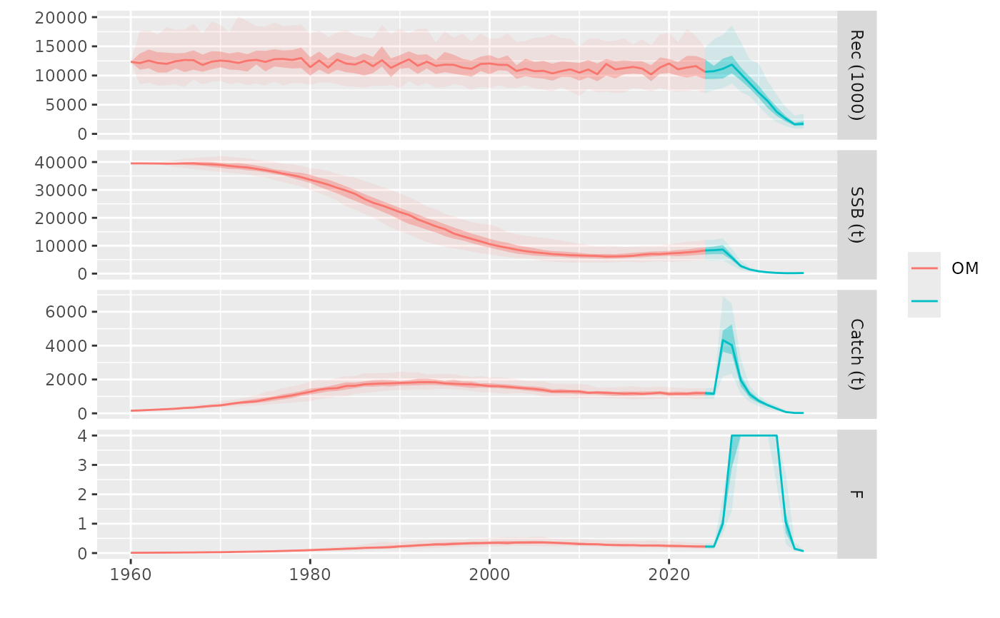

This function computes four abundance indicators from one CPUE or biomass index of abundance: the index itself, an average over a number of years, a weighted mean over those same years and the slope of the trend over the same period.
Arguments
- stk
An object representing the stock returned by the
oemmodules, FLStock.- idx
An FLIndices containing the indices rturned by the
oemmodule.- index
An integer or character, specifying the index to use from
idx. Default is 1.- nyears
An integer, the number of years to consider for the calculations. Default is 5.
- args
A list containing dimensionality arguments, passed on by mp().
- tracking
An FLQuant used for tracking indicators, intermediate values, and decisions during MP evaluation.
Value
A list containing 'stk', the input FLStock, 'ind, an FLQuants object containing the computed index metrics, and the 'tracking' table.
Details
The weighted average returned in the 'wmean' element is calculated over the last
nyears. The last year's weight is set as 50%, and the remaining years share the
other 50% proportionally. The 'slope' metric is computed on the log-transformed data.
Three elements are added to the tracking table:
mean.ind, with the index average
wmean.ind, with the index weighted average
slope.ind, with the index slope
Examples
data(plesim)
# MP control with CPUE: catch ~ weighted 4-year mean CPUE
ctrl <- mpCtrl(est=mseCtrl(method=cpue.ind, args=list(index=2)),
hcr=mseCtrl(method=hockeystick.hcr, args=list(metric="wmean",
trigger=2000, output="catch", target=1.25e5)))
# Run the MP
run <- mp(om, oem, control=ctrl, args=list(iy=2025, fy=2035))
#> 2025 - 2026 - 2027 - 2028 - 2029 - 2030 - 2031 - 2032 - 2033 - 2034 -
# Plot results
plot(om, run)
